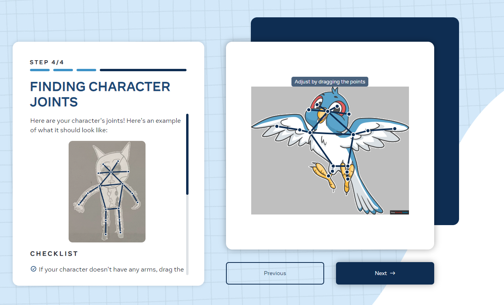

AI software was tested for its ability to convert illustration, image sets and video clips into digital animated video.
Animated Drawings allows users to convert physical or digital illustration into animated characters which use a variety of preset movement patterns.
The process starts with a user uploading an image of a character. The software then creates the character outline and puts a set of anchor points used to animate different parts of the character's body. Users can choose to edit the anchor points and the character mask for better accuracy. Once the image is converted to an animation, users can choose between various animation presets split into categories such as walking, jumping, dancing, or comedic poses. Users can not choose to create their own animations, but can edit anchor points or share their creation to others in mp4 video format.
Users can edit the anchor points for the limbs that will be animated on their character.
Advantages
Animated Drawings has an advantage when compared to other ai tools for the speed in converting a simple image to an animated character. Other benefits were the variety of motion presets due to using extensive data adapted from Adobe Mixamo and the CMU Graphics Motion Capture Lab (Carnegie Mellon University motion capture library). Additionaly the process to generate a character is very intuitive and suited for people of all age and skill levels.
Disadvantages
While animated drawings is proficient at creating a basic animated character, there are various flaws or missing features compared to other software. The generated animations are not editable so users must choose from preset motions shown from fixed perspectives. Secondly, there are no options to add annotations, sound or background material. Finally, animations can appear rough and unnatural. This is because sharing illustrations is voluntary so the ai model has a lack of material to learn from.
Krikey Ai allows users to use text prompts, audio presets, and 3d model variations to create animated video.
The process starts with a user either using a video recording or a text prompt to generate a 3D character animation. The AI scans the gestures preformed in the clip and approximates the motions for the 3D avatar. The text prompt method allows users to specify model preset, gesture preset (wave left hand), language, tone, and the text statement itself. Once generated users can modify the background, visual effects, camera position presets, gesture length and the voice script. Export options provided are mp4 video or the model assets as an fbx (3d character) file.
Users can modify the duration and type of animation, audio effect, camera position, and text within the scene.
Advantages
Positives for the generated video is the intuitive process and smooth animation of the character model when using text prompts. Additionaly the ability to modify the created animation through posing, audio and text/visual effects provides a more in-depth experience when compared to other ai animation software. Models and backgrounds themselves can also be exported rather than remaining within a closed ecosystem.
Disadvantages
While Krikey AI has comprehensive features and creates realisitcs natural animations there are some limitations to its generation options. Animations are occassionaly inaccurate to what is stated in the prompt due to the AI being only able to create video based around action verbs. Another drawback is the inability to add additional elements to the scene (props) other than the character model and changing the background. The only additional editing options are for light filters, model gestrures, text effects, backgrounds and color filters. Finally users can only choose from and customize a preset avatar and can not use a non human character model.
Kaiber Ai allows users use text prompts, video clips and images to create animated videos.
There are various methods to produce animated video generations. The first method is to create an animation through either a prompt or an image. Multiple prompts and media inputs can be used to create "storyboard scenes" for a narrative. An alternative method is to modify an existing video to a new style using a prompt. This video can also be modified through altering scenes to match audio or music tracks.
Once the animation has been generated the camera movement, video quality and aspect ratio can be adjusted.
Overall Kaiber is produces decent quality animation but various visual generation flaws, cost and prompt accuracy issues result in its usage being mainly for concept art testing or to find inspiration for an artistic project.
Generated image for two birds on a twig with film grain prompt.
Advantages
Positives for the generated animations are the variety of methods to produce decent quality animation using existing material or modifying recorded content. The different animation output options are also appreciated being a frame by frame flipbook style production or a 3 second continuous interpretation of the input material. Material produced blends well together due to the abundance of reference material from enthusiasts and professionals using the service.
Disadvantages
While Kaiber AI has comprehensive features there are various issues with the blending of elements and the depiction of facial animation. For the 3 second continuous animation elements can blend into each other or change to undesired colors not specified in the prompt. Facial animation can look unnatural with jerky eye movement and facial expression.
Kaiber relies on users purchasing credits to generate animation. Credits can be increasingly costly for longer animations and you are charged for any generation even if you don't want to use it.
Text prompt: two birds on a twig, in the style of photo taken on film, film grain, vintage, 8k ultrafine detail, private press, associated press photo, masterpiece, cinematic
Animaker allows users to use text prompts to create quick animated video that uses 2d vector graphics.
The initial video is created when a user inputs a text prompt, the tone and the style of the animation.
A variety of customization options are offered to edit the generated video. Simple but effective avatar customization options allow users to customize accesories, facial expressions, clothing and hair. There are various preset gestures, vector/photo backgrounds, and additional scenery to experiment with. For the video content itself voicover is automatically lip sysnced , with the ability to add subtitles, overlay additional content, and copyright protection (digital watermarks).
Overall Animaker produces high quality animated videos but has limitations in producing content restricted to human animation and solely in a flat vector graphic presentation.
Avatars are limited to 2d vector garphics. Backgrounds are limited to 2d vector presets, gradients and photos.
Advantages
Positives for the generated animations are te speed in creating a workable animation and the visual appeal of easy to discern vector graphics. There is little to no artifacting or visual inconsistensies found in other ai image generation due to the use of the vector art. Depictions are stylized and resemble a digital cartoon proportion and shading.
Disadvantages
While Animaker creates quick, professional vector animations it does have various limitations. The subject of an animation is limited to human model presets, and you are limited to preset customization options. The second drawback is output being limited to vector graphics and a 2d plane for the character animation. This limits creative ability and presentation options.
Runway allows users use text prompts, video clips and images to genereate audio, images and animated videos. Runway also allows users to train their own Ai image generator and to upscale existing image. content.
There are various methods to produce animated video. The first method is to enter a text prompt using various setting such as frame interpolation, fixed seed numbers and upscaling to achieve the desired gerneration. Animation can be extended up to 16 seconds. The second method is to the same but by using an image for visual reference. THe final method is to transform existing footage to a prefdefined style option or to use a text prompt to state your desired output.
With each of the generated animations various settings can be fine-tuned such as the degree of motion in the scene, what areas to animate, the camera motion, and lip sync to audio.
Overall Runway produces quality animation but has issues with visual consistency, has high costs to use features, and steep system requirements to produce quality generation.
Using a motion brush tool to specify what to animate in the generated video.
Advantages
Positives for the generated animations are the variety of methods to produce decent qualtiy animation using existing material or modifying recorded content. The animation output length is appreciated being an up to 16 second continuous interpretation of the input material. Material produced is cohesive due to the abundance of reference material from enthusiasts and professionals using the service.
Disadvantages
While Runway has comprehensive features there are various issues with the blending of elements and the depiction of facial animation. For the continuous animation elements can blend into each other or change to undesired colors not specified in the prompt. Facial animation can look unnatural with jerky eye movement and facial expressions.
There are also additional credit costs to use tools to uspcale and remove watermarks from generated video. Output options are limited with no png or ProRes export options for video animation.